Tất Cả Sản Phẩm
 -25%
-25%
Amiya Solo Around the World Ver. - Arknights Scale 1/7| Good Smile Arts Shanghai Figure
5.500.000đ

Ako Dress 1/7 - Blue Archive | Good Smile Company Figure
3.300.000đ
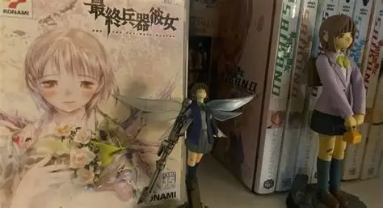
-20%Figure Saishū Heiki Kanojo + Full boxset
10.900.000đ
 -15%
-15%
Abigail Williams Foreigner Summer 1/7 - Fate/Grand Order | Alter figure
5.900.000đ
 -10%
-10%
The World of Masamune Shirow Exhibition Ghost in The Shell and The Pathof Creativity - Motoko Kusanagi Figure [Pre-Order Oct 2026]
8.147.000đ
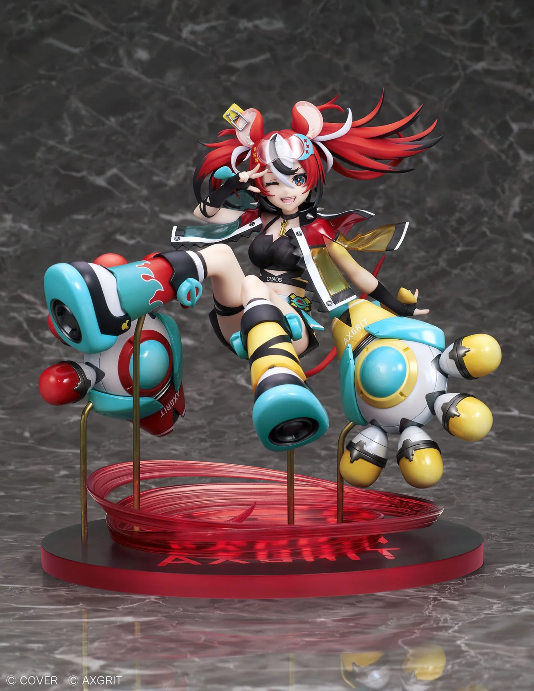
-10%Hololive English: Promise - Hakos Baelz - AXGRIT figure 1/7 (Design COCO)
11,100,000đ
 -10%
-10%
Hatsune Miku: Land of the Eternal
9.990.000đ
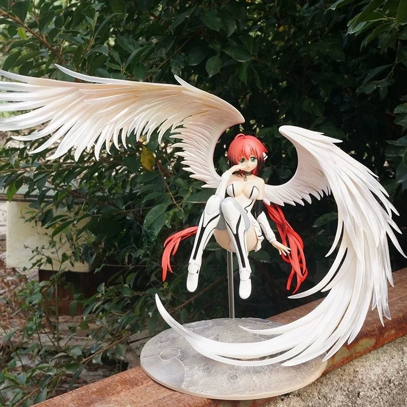
-7%Heaven's Lost Property of Heaven Icarus Ikaros Figure Model Sora No Otoshimono
10.590.000đ
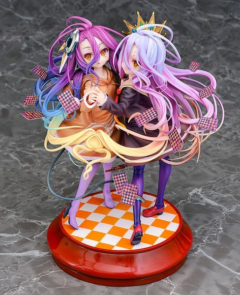
-7%Schwi Dola & Shiro No Game No Life: Zero 1/7 | Phat Company Figure
4,400,000đ
 -7%
-7%
Uma Musume Pretty Derby - Rice Shower The Day I Dreamed Of Ver.[Pre-Order Jan 2027]
10.090.000đ
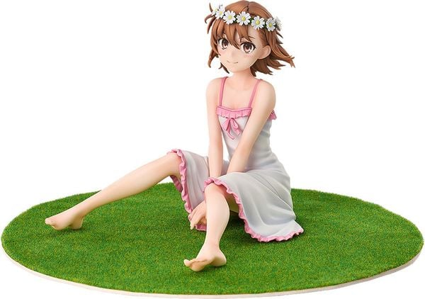
-0%Mikoto Misaka 1/7 Toaru Kagaku no Railgun T | Good Smile Arts Shanghai Figure
3.200.000đ
 -0%
-0%
Chise ver chill
590.000đ
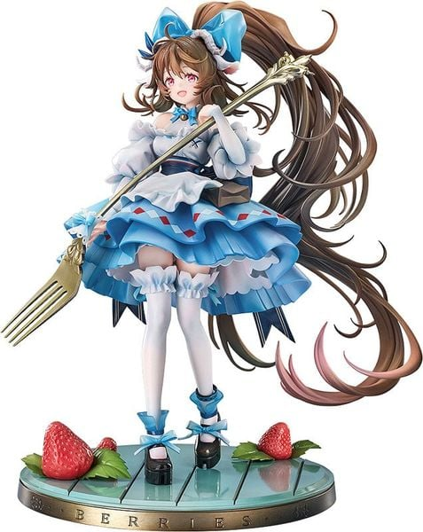
-10%Eyjafjalla the Hvit Aska A Picnic Before A Long Trip Ver. 1/7 Arknights | Good Smile Arts Shanghai Figure
5.600.000đ
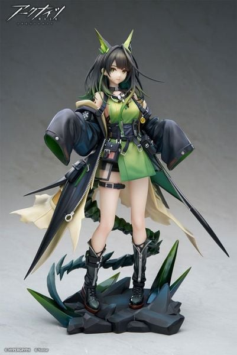
Mon3tr 1/7 - Arknights | APEX Figure
4.800.000đ
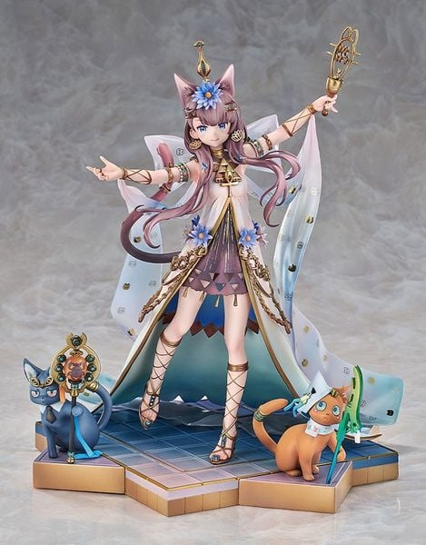
Pepe Nuit of the Nightsky Ver. 1/7 - Arknights | Good Smile Arts Shanghai Figure
5.600.000đ
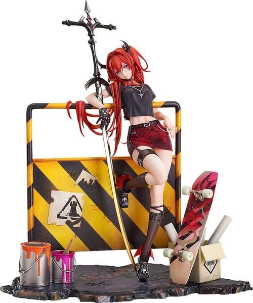
-15%Surtr Liberte Echec VER. 1/7 - Arknights | Good Smile Arts Shanghai Figure
4.750.000đ
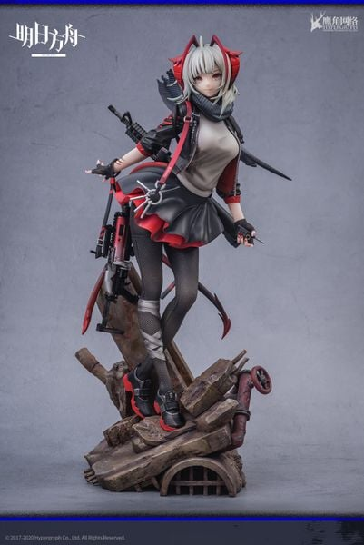
W 1/7 - Arknights | Hypergryph Figure
3.600.000đ

Tendou Alice 1/7 - Blue Archive | WINGS inc. figure
10.600.000đ

Arona - AmiAmi Limited Edition 1/7 - Blue Archive ( GOLDENHEAD ) Figure
10.100.000đ
 -5%
-5%
Kayoko Dress 1/7 - Blue Archive | Max Factory figure
4,350,000₫

POP UP PARADE Midori Maid Ver. - Blue Archive | Good Smile Company Figure
8.600.000đ

POP UP PARADE Momoi Maid Ver. - Blue Archive | Good Smile Company Figure
8.600.000đ
 -20%
-20%
Yuuka Pajamas 1/7 Blue Archive | Good Smile Arts Shanghai Figure
3.890.000₫

Saber Garden of Avalon 1/7 - Fate stay night | Good Smile Company Figure
5.350.000₫
 -15%
-15%
Francesca Prelati 1/7 - Fate/strange Fake | Kotobukiya figure
4.400.000đ

Illyasviel Von Einzbern Wedding Swimsuit ver. 1/7 Movie Fate/Kaleid Liner Prisma Illya Licht The Nameless Girl | FURYU Figure
5.600.000đ

Miyu Edelfelt Wedding Swimsuit ver. 1/7 - Movie Fate/Kaleid Liner Prisma Illya Licht The Nameless Girl | FURYU Figure
5.600.000đ

Saber/Souji Okita Alter Final Ascension Ver. 1/7 - Fate/Grand Order | Alter Figure
4.930.000đ

Frame Arms Girl GRANDE SCALE Frame Music Girl Hatsune Miku 1/6 VOCALOID Series | Kotobukiya Plastic Model
6.000.000đ

Hatsune Miku: 15th Anniversary Ver.
8.900.000đ

Hatsune Miku - 1/7 - Sakura Fairy ver. - Scale Figure – Otaku Owlet
3.800.000đ
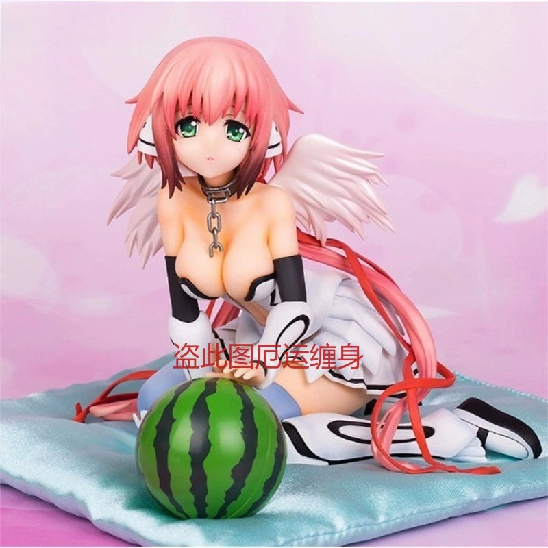
Heaven's Lost Property 1/6 Scale Figure - Ikaros [Pre-Order Dec 2026]
3.440.000đ
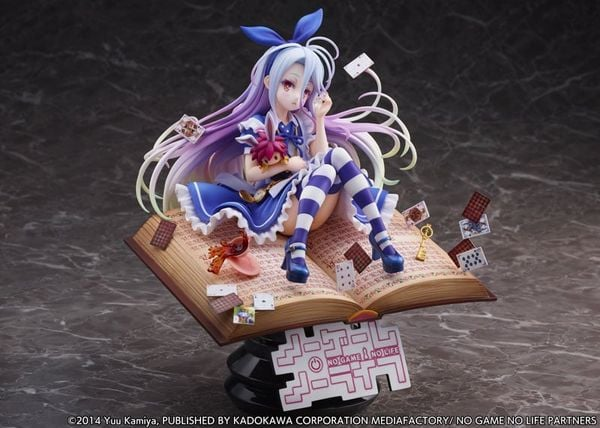
Shiro Alice in Wonderland Ver. 1/7 - No Game No Life | eStream Figure
7.000.000đ
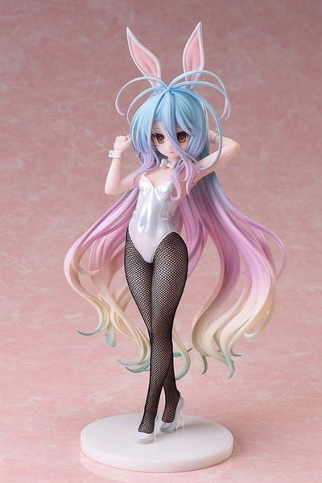
Shiro Bunny Ver 1/6 - No Game No Life | FREEing Figure
10.000.000đ
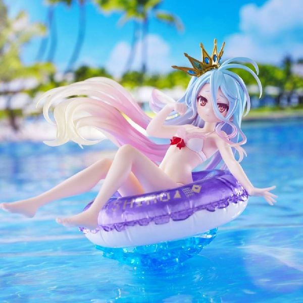
No Game No Life - Shiro - Aqua Float Girls | Taito Figure
490.000đ
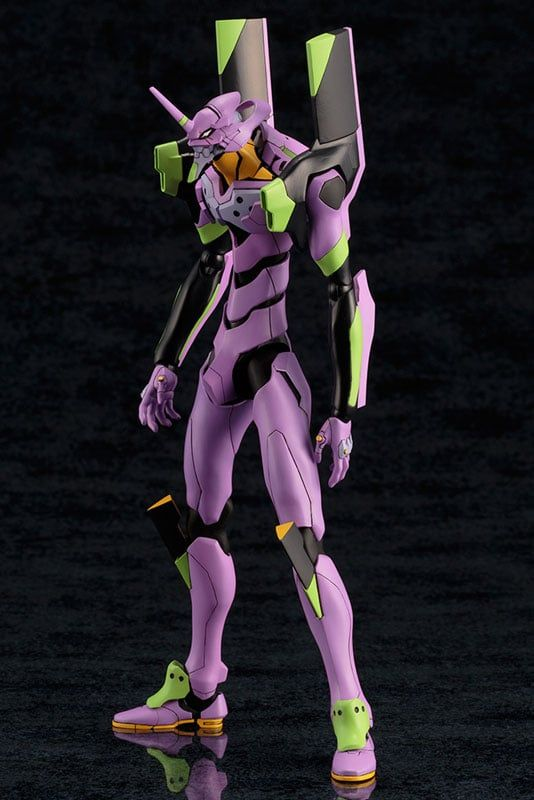
EVA-01 Test Type TV Ver. - Neon Genesis Evangelion | Kotobukiya Plastic Model
6.000.000đ